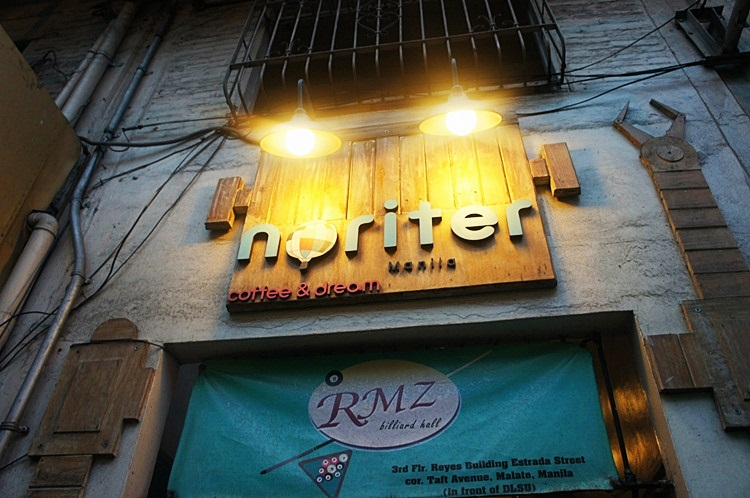
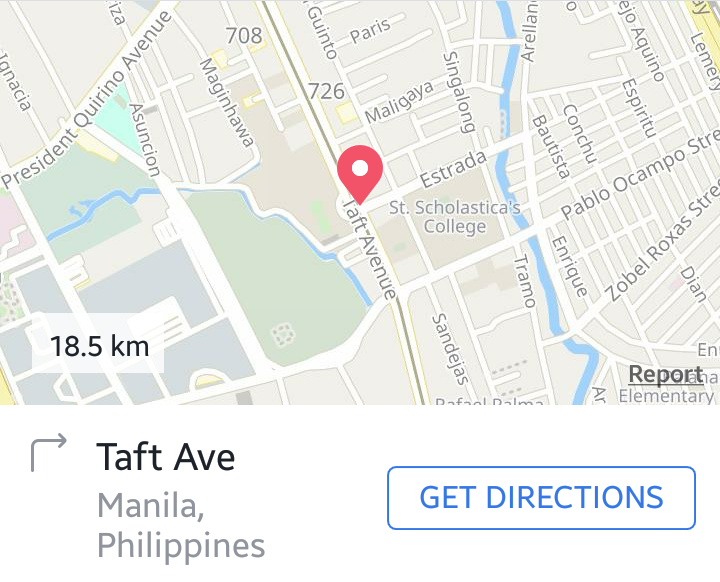

Café Noriter is a Korean-themed coffee shop that offers beverages, food, and ambiance.
From Korea, Noriter's concept was brought to the Philippines by a new proprietor and was successful in attracting the Filipino market.
The company's first branch was established in Dumaguete, followed by a second branch located in Taft Avenue, Manila.
Without a doubt, Café Noriter was triumphant in creating a place where customers can feel at home, enjoy a cup of coffee, relax, and have fun.
It is also Cozy and ideal for studying. It has strong wifi, fair air conditioning and good lighting.
We recommend oreo cheesecake and vanilla milkshake.
Ideal to go here is around 5pm for there would be very few customers.
And noticed that most of their visitors are couples so if you are okay with pda, this cafe is just fine.
Although our school is very far from Cafe Noriter, we still find ourselves a regular visitor of the cafe.
First introduced by a La Sallian friend, we we’re impressed with the cute and whimsical interior of the place.
Cafe Noriter is a Korean inspired café that can be found in Taft Avenue, Manila.
“Noriter” is the Korean term for playground, and indeed, this playhouse of a cafe is oozing with eccentricity and fun.
Café Noriter emanates a very youthful vibe with all the quirky knick knacks displayed in their cupboards.
The place can also accommodate a large number of customers as they have lots of tables and seats.
Some tables have some personal touches to them, as well.
When visiting cafes, we always go for the ones with a comfy ambience.
It is a heavenly bonus when a cafe plays classical or jazz music (in that case, I’m in for a very productive night/ afternoon).
Cafe Noriter can accommodate large groups.
The two-storey seats are perfect for those who want to have a homier feel because you get to sit on the floor:
The wall decors such as installations and paintings also contribute to the airy atmosphere inside the café.

Cafe Noriter
Is@2nd Level, Reyes Bldg. Taft Ave. corner Estrada St., Malate, Manila, Metro Manila, Philippines
No. (+63 2) 489-5223
Schedule: Monday to Friday 9:00pm to 11:00pm
Saturday 11:00am to 8:00pm